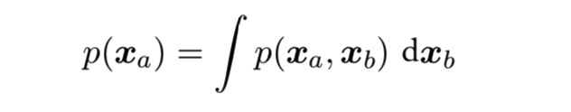
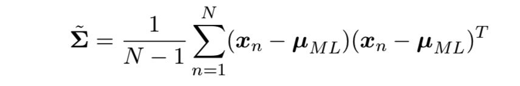
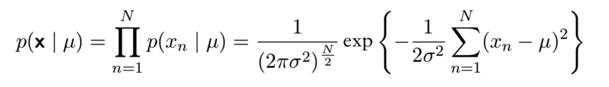

概率分布
本章主要研究某些特殊的概率分布，它们是构成复杂模型的基石。
本章中假设数据点独立同分布，我们考虑离散随机变量的二项分布和多项式分布，以及连续随机变量的高斯分布，这些分布都是参数分布的典型例子。在给定数据集的条件下，我们想确定参数的合适的值，频率学家通过最优化某些准则（如似然函数），而在贝叶斯观点中，引入参数的先验分布然后使用贝叶斯定理来计算后验概率分布。
于是引出了共轭先验，它使得后验概率分布的函数形式与先验相同，因此使得贝叶斯分析得到极大的简化。
参数方法是限制分布的函数形式，这对于一个具体应用来说是不合适的，另一种替代的方法叫非参数密度估计法，这些模型仍然具有参数，但是这些参数控制的是模型的复杂度而不是分布的形式。
二元变量
考虑一个二元随机变量 \(x \in \{0,1\}\) ，\(x=1\) 的概率被记作为参数 \(\mu\) ，\(0 \le \mu \le 1\) ，所以 \(x\) 的概率分布可以写成：
$$Bern(x \ | \ \mu) = \mu^x (1-\mu)^{1-x}$$
这被称为伯努利分布，可以证明：
假设有一个 \(x\) 的观测值的数据集 \(\mathcal{D} = \{x_1,…,x_N\}\) ，且每次观测都是独立地从 \(p(x\ | \ \mu)\) 中抽取的，因此我们可以构造关于 \(\mu\) 的似然函数：
从频率学家观点看我们可以用最大似然函数来估计 \(\mu\) 的值，或者最大话对数似然函数，在伯努利分布下，对数似然函数为：
可以得到最大似然的估计值：
假设我们扔一枚硬币三次，巧合的是三次都是正面向上，在最大似然下，我们得出 \(\mu_{ML}=1\) ，那么预测未来的观测值都是正面向上，这很明显是不合理的，事实上引入 \(\mu\) 的先验我们会得到一个更合理的结论。
我们也可以求解给定数据集规模N的条件下， \(x=1\) 出现的数量 m 的概率分布，这被称为二项分布：
对于独立事件，加和的均值等于均值的加和，加和的方差等于方差的加和，由于 \(m=x_1 + … + x_N\) :
Beta 分布
在二项分布中，最大似然解也是数据集中 \(x=1\) 的观测所占的比例。
为了用贝叶斯的观点看待这个问题，我们需要引入一个关于 \(\mu\) 的先验概率分布 \(p(\mu)\) 。我们选择正比于 \(\mu\) 和 \(1-\mu\) 的幂指数的先验概率分布，那么后验分布就和先验分布有着相同的函数形式，这被称为共轭性，因此我们选择先验分布为 Beta分布：
a,b被称为超参数，它们控制了参数 \(\mu\) 的概率分布。
那么 \(\mu\) 的后验概率：
其中 \(l = N-m\) ，我们发现它仅仅是另一个Beta分布：
从先验到后验，a的值变大了m，b的值变大了l。我们可以把超参数a和b分别看成 \(x=1\) 和 \(x=0\) 的有效观测数，如果接下来观测到更多的数据，那么后验概率可以扮演先验概率的角色。
我们可以假想每次值取一个观测值，然后在每次观测之后更新当前的后验分布，更新方法是让当前的后验分布与新观测值的似然函数相乘，然后归一化。在每个阶段，后验概率是一个Beta分布，观测到一个 \(x=1\)对英语把a的值加1，而观测到 \(x=0\) 会使b加1。
由此我们可以引入顺序方法，顺序方法每次使用一个观测值，或一小批观测值，然后在使用下一个观测值之前丢弃它们，这可以应用到实时学习的场景中，输入为一个稳定持续的数据流，模型必须在观测到所有数据之前就进行预测，不需要将所有数据都存储到内存里。
从图2.2可以看出，当我们观测的数量增加时，后验分布的图像变得更尖了，这通过Beta分布的方差可以看出来，事实上，随着我们观测到越来越多的数据，后验概率表示的不确定性将持续下降（平均意义上来说），考虑一个一般的贝叶斯推断问题，参数为 \(\theta\) ：

多项式变量
我们还会遇到可以取 K 个互斥状态中的某一种的离散变量，这个变量可以被表示成一个 K 维向量 \(x\) ，向量中的一个元素 \(x_k=1\) ，其他元素等于0，这样的向量满足：
$$\sum_{k=1}^K x_k=1$$
用 (\mu_k\) 表示 \(x_k=1\) 的概率，那么 \(x\) 的分布就是：
其中 \(\mu=(\mu_1,…,\mu_k)^T\)，参数 \(\mu_k\) 满足 \(\mu_k \ge 0\) 和 \(\sum_k \mu_k=1\)。

现在考虑一个有 N 个独立观测值的数据集 \(\mathcal{D}\) ，似然函数为：
它表示观测到 \(x_k=1\) 的次数，被称为这个分布的充分统计量。
通过最大化似然，我们得到：
$$\mu_k^{ML} = \frac{m_k}{N}$$
考虑 \(m_1,…,m_k\) 在参数 \(\mu\) 和观测总数 N 条件下的联合分布：
其中：
狄利克雷分布
类似的，我们也想为多项式分布找到它的共轭先验：
概率的归一化形式为：
这被称为狄利克雷分布(Dirichlet distribution)，其中：
$$\alpha_0 = \sum_{k=1}^K \alpha_k$$
所以 \(\{\mu_k \}\) 的后验分布为：
归一化：
与二项分布的先验概率为 Beta 分布相同，我们可以把狄利克雷分布的参数 \(\alpha_k\) 看成 \(x_k=1\) 的有效观测数。
我们也可以把二项分布表示成多项式分布中 K=2 的特殊形式，结果是一样的。
高斯分布
对于 D 维向量 \(x\) ，多元高斯分布的形式为：
对于一个一元实值向量，使熵取得最大的是高斯分布，这个性质对多元高斯也成立。
中心极限定理告诉我们，在某些温和的条件下，一组随机变量的和随着和式中项的增加而逐渐趋向高斯分布：
下面讨论一下高斯分布的性质。
高斯对 \(x\) 的依赖是通过下面形式的二次型：
\(\Delta\) 被称作 \(\mu\) 和 \(x\) 的马式距离，当 \(\sum\) 为单位矩阵时，就变成了欧式距离。
协方差矩阵的特征向量：
而特征向量可以选择为单位正交的：
那么 \(\sum\) 可以表示成特征向量展开的形式：
令：
那么二次型可以表示为：
定义向量 \(y=(y_1,…,y_D)^T\)：
其中\(\mathcal{D}\) 是一个矩阵，它的行是向量 \(u_i^T \)，可以看出 \(U\) 是一个正交矩阵，它满足：
\(UU^T=I\) 和 \(U^TU=I\)
且有：
那么高斯分布在y坐标系上就是：
高斯分布的期望和二阶矩：
方差：
高斯分布被广泛的用作概率密度模型，但是它的一个局限性是自由参数的数量太多了，一个通常的对称协方差矩阵 \(\sum\) 有 \(\frac{D(D+1)}{2}\) 个独立参数，\(\mu\) 有 \(D\) 个独立参数，共有 \(\frac{D(D+3)}{2}\) 个参数。
但我们可以限制协方差的形式，比如考虑对角阵 \(\sum = diag(\sigma_i^2)\) ，这时有 2D 个独立参数，常数密度对应的轮廓线是与轴对齐的椭球。考虑 \(\sum=\sigma^2 I\) ，这被称为各向同性协方差，共有D+1 个独立参数，常数概率密度是球面。这些限制可以减少分布的自由度，但是也限制了描述模型中的一些相关性的能力。
高斯分布的另一个局限是它是单峰的，但通过引入latent variables or hidden variables（隐变量），可以将多峰分布使用混合高斯模型来描述。
条件高斯分布
多元高斯分布的一个重要性质是，如果两组变量是联合高斯分布，那么以一组变量为条件，另一组变量同样是高斯分布。任何一个变量的边缘分布也是高斯分布。
我们把 \(x\) 划分为 两个不相交的子集 \(x_a\) 和 \(x_b\) ，不失一般性，可以令 \(x_a\) 为 \(x\) 的前M个分量，令 \(x_b\) 为后 D-M 个分量：
也定义对应的均值向量 \(\mu\) 和 协方差矩阵 \(\sum \)的划分：
引入精度矩阵:
精度矩阵的划分：
则有：
那么我们可以求出：
可以发现用精度矩阵确实要简洁一些。
边缘高斯分布
我们要讨论边缘概率分布：

则有：
高斯变量的贝叶斯定理
假定我们被给定一个高斯边缘分布 \(p(x)\) 和一个高斯条件分布 \(p(y|x)\) ，其中 \(p(y|x)\) 的均值是 \(x\) 的线性函数，协方差与 \(x\) 无关，这是线性高斯模型。我们想找到边缘概率分布 \(p(y)\) 和 条件概率分布 \(p(x|y)\)
假设 \(x\) 的维度是 M，\(y\) 的维度是 \(D\)：
首先找到 \(x\) 和 \(y\) 的联合分布表达式，定义
则有
可以看出这是 \(z\) 的分量的一个二次函数，所以 \(p(z)\) 是一个高斯分布
可以得出：
那么就有边缘分布 \(p(y)\)：

条件分布 \(p(x|y)\) ：
总结如下：
其中
高斯分布的最大似然估计
给定一个数据集 X=\((x_1,…x_N)^T\)，假定观测 \(\{x_n\}\) 是独立地从多元高斯分布中抽取的，可以使用最大似然法估计分布的参数：
通过简单的整理，我们发现似然函数对数据集的依赖只通过下面两个量体现：

这被称为高斯分布的充分统计量。
令这个导数为0:
我们得到 \(\mu\) 的最大似然估计：
同样也可以得到 \(\sum\) 的最大似然估计：
分别对均值和协方差求期望：
我们看到协方差的最大似然估计的期望小于真正的值，它是有偏的。我们可以定义一个不同的估计值来修正这个误差：

它的期望和 \(\sum\) 相等
顺序估计
顺序估计允许每次处理一个数据点，然后丢弃这个点，这对于在线应用很重要，并且当数据集很大以至于无法一次处理所有数据点时，顺序估计也很重要。
考虑 \(\mu_{ML}\) ，当它依赖于第 N 次观察时，记作 \( \mu_{ML}^{(N)}\) ：
这个结果很有意思，在观察到 N-1 个数据点后，我们把 \(\mu\) 估计为 \( \mu_{ML}^{(N-1)}\) ，然后观察到了数据点 \(x_N\) ，这样就得到了一个修正的估计 \( \mu_{ML}^{(N)}\) ，这个估计的获得方式是：把旧的估计沿着“错误信号（ \(x_N- \mu_{ML}^{(N-1)}\) ）” 方向移动一个微小的量。随着 N 增加，后续数据点的贡献也会变小。
但是不总能用上面的方法推导出一个顺序的算法，下面我们寻找一个更通用的顺序学习方法：Robbins-Monro算法。
考虑一对随机变量 \(\theta\) 和 \(z\) ，已知 \(\theta\) 的条件下，\(z\) 的条件期望定义了一个确定的函数 \(f(\theta)\)：
我们的目标是寻找根 \(\theta^\) 使得 \(f(\theta^)=0\)
假设每次观测到一个 \(z\) 值，我们想找到一个顺序估计方法来找到 \(\theta^\) 。Robbins-Monro方法定义了一个根 \(\theta^\) 的顺序估计序列：
其中 \(z(\theta^{(N)})\) 是当 \(\theta\) 取 \(\theta^{(N)}\) 时 \(z\) 的观测值，系数 {\(\alpha_N\)} 表示满足下列条件的正数序列：
第一个条件确保后续修正的幅度会逐渐减小，第二个条件确保算法不会收敛不到根的值，第三个条件保证了累计的噪声具有有限的方差，因此不会导致收敛失败。
现在考虑一个一般的最大似然问题如何用这种方法顺序求解，最大似然解 \(\theta_{ML}\) 是负对数似然函数的一个驻点：
其中：
$$z(x,\theta)=-\frac{\partial }{\partial \theta} ln \ p(x\ |\ \theta)$$
那么：
高斯分布的贝叶斯推断
首先考虑一个一元高斯随机变量 \(x\) ，假设方差 \(\sigma^2\) 已知，我们的任务是从一组 N 次观测 x=\(\{x_1,…,x_N\}\) 中推断均值 \(\mu\) ，似然函数：

似然函数不是 \(\mu\) 的概率密度，它没有被归一化。
若我们选择先验分布 \(p(\mu)\) 为高斯分布，因为对应的后验概率是两个 \(\mu\) 的二次函数的指数的乘积，因此后验也是一个高斯分布，假设先验分布为：
可以证明后验概率形式为：
其中 \(\mu_{ML}\) 为 \(\mu\) 的最大似然解，
我们发现，后验分布的均值是先验分布的均值和最大似然解的折中，若 N=0，那么后验均值就变成了先验均值，若 N 趋近于正无穷，后验均值由最大似然解给出。类似的，对于后验方差，若N=0，后验的方差就是先验方差，若 N 趋近于正无穷，后验方差趋于0，那么后验分布在最大似然解附近变成了无限大的尖峰。
同样的，可以直接把结论推广到方差已知，均值未知的 D 维高斯随机变量 \(x\) 中。
对于推断问题，如果从一个顺序观点来看，贝叶斯方法非常自然：

可以看到观测到 N-1 个数据点之后的后验概率分布，它可以被看成一个先验分布，然后使用贝叶斯定理与似然函数(与 \(x_N\) 有关)结合到一起，得到观察 N 个点之后的后验概率。
现在我们假设均值已知，要推断方差，我们使用精度 \(\lambda = \frac{1}{\sigma^2}\) 来进行计算是方便的， \(\lambda\) 的似然函数为：
对应的共轭先验因此应该正比于 \(\lambda\) 的幂指数和 \(\lambda\) 的线性函数的指数，这对应于Gamma分布：
它的均值和方差：
\(\lambda\) 后验分布：
可以把它看成形式为 \(Gam(\lambda\ |\ a_N,\ b_N)\) 的Gamma分布，其中：
我们看到观测 N 个数据点的效果是把系数 a 的值增加了 \(\frac{N}{2}\) ，因此可以把先验分布中的参数 \(a_0\) 看成 2\(a_0\) 个有效先验观测，同理对于参数 \(b_0\) 可以看成方差为 \(\frac{b_0}{a_0}\) 的 2\(a_0\) 个有效先验观测。对于指数族分布来说，把共轭先验看成有效假想数据点是很通用的思想。
现在假设精度和均值均未知，想找到这一情况下的共轭先验：
现在想找到一个先验分布 \(p(\mu, \lambda)\) 它对于 \(\mu, \lambda\) 的依赖与似然函数有着相同的形式：
其中 \(c,d,\beta\) 都是常数，我们可以把它看成高斯分布和 Gamma分布的乘积：
这被称为正态-Gamma分布，其中
这不是独立高斯和独立Gamma的乘积，因为 \(\mu\) 的精度是 \(\lambda\) 的线性函数。
对于 D 维向量 \(x\) 的多元高斯分布，假设精度已知，则均值的先验分布仍是高斯分布。若均值已知，精度矩阵未知，共轭先验是 \(Wishart\) 分布。若均值和精度均未知，共轭先验为正态-Wishsart分布。
学生t分布
我们看到高斯分布的精度的共轭先验是Gamma分布，如果我们有一个一元高斯分布 \(N(x\ |\mu,\ \tau^{-1})\) 和 一个Gamma先验分布 \(Gam(\tau\ |a,\ b)\) ，我们把精度积分出来，可以得到 \(x\) 的边缘分布：
定义新的参数 \(v=2a, \ \lambda=\frac{a}{b}\) ，使用新的参数，分布 \(p(x|\mu,a,b)\) 的形式为：
这被称为学生t分布，参数 \(\lambda\) 有时被称为t分布的精度，即使通常它并不等于方差的倒数，参数 \(v\) 被称为自由度，对于 \(v \) 趋于无穷的情况下，t分布变成了高斯分布，均值为 \(\mu\) ，精度为 \(\lambda\) 。
t分布有个重要的性质：鲁棒性。我们发现它通常比高斯分布有着更长的尾巴，所以它对于数据集中的离群点不会像高斯分布那样敏感。
与一元变量相同的方法，可以求出多元变量的t分布
它有下列性质：
周期变量
无论是高斯变量本身，还是它作为更复杂的概率模型的基石，高斯分布在实际应用中都非常重要。但对于周期变量，用高斯分布建模并不合适。
如果对周期变量应用传统的概率分布的话，这强烈依赖于原点的选择，很明显是不合理的。
考虑周期变量的观测数据集 \(\mathcal{D}=\{\theta_1,…,\theta_N\}\) 的均值问题，我们假定\(\theta\) 的单位为弧度，为了找到均值的一个不变的度量，我们注意到观测可以被看成单位圆上的点，因此可以被描述为一个二维单位向量 \(x_1,…x_N\)，我们可以对它求平均：
然后找到这个均值对应的角度 \(\overline{\theta}\) ，这个定义保证了均值的位置与极坐标原点的选择无关，可以得出：
然后可以推出高斯分布对于周期变量的推广：von Mises分布。
混合高斯模型
之前已经提到，单一的高斯分布高斯分布只有一个峰值，这不能很好的描述现实中的很多数据的分布，但是我们如果把一些高斯分布线性组合起来，往往会有很好的效果。
事实上我们通过足够多的高斯分布，并调节他们的均值和方差以及组合系数，几乎所有的连续概率密度都能以任意的精度近似。
考虑 K 个高斯概率密度的叠加：
要求混合系数 \(\pi_k\) 满足：
根据概率的加和规则和乘积规则，边缘概率密度为：
我们把 \(\pi_k=p(k)\) 看成选择第 k 个成分的先验概率，把\(N(x|\mu_k,\sum_k)=p(x|k)\) 看成以 k 为条件的 \(x\) 的概率。后验概率 \(p(x|k)\) 起着一个重要作用，也被称为 responsibilities。后验概率可以表示为：
高斯混合分布由三组参数控制：\(\pi,\mu,\sum\) ，令 \(\pi = \{\pi_1,…,\pi_K\},\mu = \{\mu_1,…,\mu_K\},\sum = \{\sum_1,…,\sum_K\}\) ，用最大似然法确定这些参数值：
这个无法求出闭式解，可以通过 EM 算法求解。